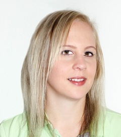

Über mich
Seit meiner Kindheit liegt mir viel am Wohlergehen meiner Mitmenschen. Nach Abschluss meiner Schulzeit absolvierte ich zuerst eine Ausbildung als Konditor Confiseur und arbeitete danach einige Jahre in diesem kreativen Beruf.
Nach einem Unfall mit monatelangen Schmerzen wurde mir klar, dass ich mich beruflich in eine andere Richtung entwickeln möchte. Die Ausbildung zur Kinesiologin hat mein Leben zum Positiven verändert. Ich bin mehr in meiner Mitte, kann Entscheidungen leichter treffen und verwirkliche mich selber, jetzt auch mit meiner eigenen Praxistätigkeit.
Meine Ausbildungen
- 2009-2013 Vorkurse und Ausbildung zur IK Kinesiologin bei Rosmarie Sonderegger an der IKAMED Institute AG Zürich, mit Auszeichnung
- 2007-2013 einige Jahre praktische Berufserfahrung als Konditor Confiseur
- 2004-2007 Ausbildung als Konditor Confiseur
- Zusatzausbildungen:
- Alpha-Synapsen-Programmierung®
- Bodytalk
- Quanten-Matrix-Heilung
- Touch for Health I-III
- Brain Gym I+II
- Movement Re-Education
- Miteinander reden – sich besser verstehen
- Emotionales Akupunkteklopfen
- Hygiene
- Naturalifting
- Bachblüten
- Gesprächsführung mit Kindern und Jugendlichen
- Praxismentoring
- Familien- und Systemstellen
- Schulmedizinische Ausbildungen:
- Anatomie
- Physiologie
- Psychosomatik
- Psychopathologie
- Pharmakologie
- Neuromed
- Reanimation BLS-AED-SRC
- Emergency Training